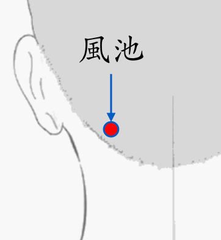

【穴位名稱】: 風池 (GB20)

【治療症狀】: 高血壓 清鼻涕 腦挫傷 腦水 周圍性顏面神麻痺 三叉神經痛 肩痛不舉 落枕 頸痛 腰酸腰痛 蕁麻疹 頭痛 偏頭痛 面神經麻痺 牙痛 牙酸 牙齦炎 眼睛痛 麥粒腫(針眼) 耳嗚 聽力問題 喉嚨痛 扁桃腺炎 急性結膜炎 近視 扁桃腺炎 耳源性眩暈(美尼爾氏癥) 眩暈
【取穴位置】: 項部枕骨下，斜方肌上部外緣與胸鎖乳突肌上端後緣之間凹陷處。當風府與翳風之間，或顳骨乳突尖 (下端)與第二頸椎棘突之間連線的中點。《針灸甲乙經》：「在顳? (腦空)後髮際陷者中」；《外台秘要》：「夾項兩邊」；《素問·氣府論》王冰註：「在耳後陷者中，按之引於耳中」；《醫學入門》：「耳後一寸半，橫俠風府」；《針方六集》：「俠風府兩傍各開二寸」；《循經考穴編》：「平耳墜微上，大筋外髮際陷中，與翳風相齊」。
【針刺方法】: 向對側眼部的目內眥方向刺入0.5～1.2吋，不可深刺，尤其不能向對側目外眥、耳屏或耳屏前緣方向深刺，以防止刺入顱腔損傷延髓或腦部。也不可向同側眼部的目內眥方向深刺，以免損傷椎動脈。一般不灸。